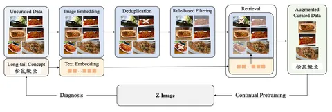
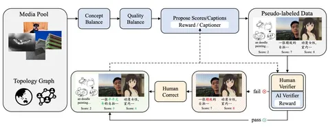

Продолжаем разбирать большую статью о новой генеративной модели Z-Image. В первой части серии поговорили об инфраструктуре для обработки данных, а сегодня обсудим ошибки модели.
Во время обучения Z-Image авторы статьи столкнулись с тем, что модель некорректно выучивает сложные концепты. В качестве примера (первая схема) они приводят выражение 松鼠鳜鱼 — название блюда китайской кухни «рыба-белка»: когда модель пытается сгенерировать изображение рыбы-белки, она может решить что ей нужно нарисовать 松鼠(рыбу) и 鳜鱼(белку).
Чтобы бороться с такими случаями, авторы используют сложную систему курирования данных с vector engine и деревом концептов. После того как граф концептов подтверждает, что рыб-белок в датасете не хватает, надо найти хорошие примеры и показать их модели. Для этого в части датасета — например, той, что соответствует концепту «китайская еда», — ищут наиболее подходящие изображения с помощью vector engine и добавляют их в текущий батч обучения. А потом регулярно повторяют эту операцию во время обучения.
Подробнее рассмотреть общий алгоритм обогащения датасетов можно на второй схеме:
1. Из всего датасета выделяют подмножество изображений, соответствующих непредставленным концептам.
2. При помощи VLM модели присваивают им caption’ы.
3. Люди и VLM оценивают качество полученных семплов.
4. Отвергнутые семплы с некорректными подписями к картинкам правят люди.
5. VLM дообучается на результатах такой разметки на каждой крупной стадии обучения модели. После каждой итерации дообучения доля картинок, оцениваемых VLM, растёт. Условно, если на первой стадии модель проверяла всего 20% семплов, на последней — уже 50%.
Комбинация обоих описанных механизмов постепенно улучшает датасет.
Кроме классической text-to-image-задачи, авторы также обучают модель редактировать изображения. Чтобы подготовить данные для этого, используют несколько стратегий:
- Произвольно переставляют и комбинируют различные версии одного и того же входного изображения, отредактированные другими моделями: например, инпейнтинг или смена ракурса.
- Собирают пары изображений из видеокадров: берут два похожих и описывают разницу между ними в виде инструкции. Например, «перемести машину из города в деревню» для кадров с одной и той же машиной в разных локациях.
Генерируют синтетические данные с текстами — подбирают изображения, пишут на них разные тексты и генерируют инструкции вида «поменяй текст на картинке с "котик" на "собачка"».
Подробнее о том, как устроена архитектура Z-Image, расскажем в третьем посте.
Разбор подготовил
CV Time

